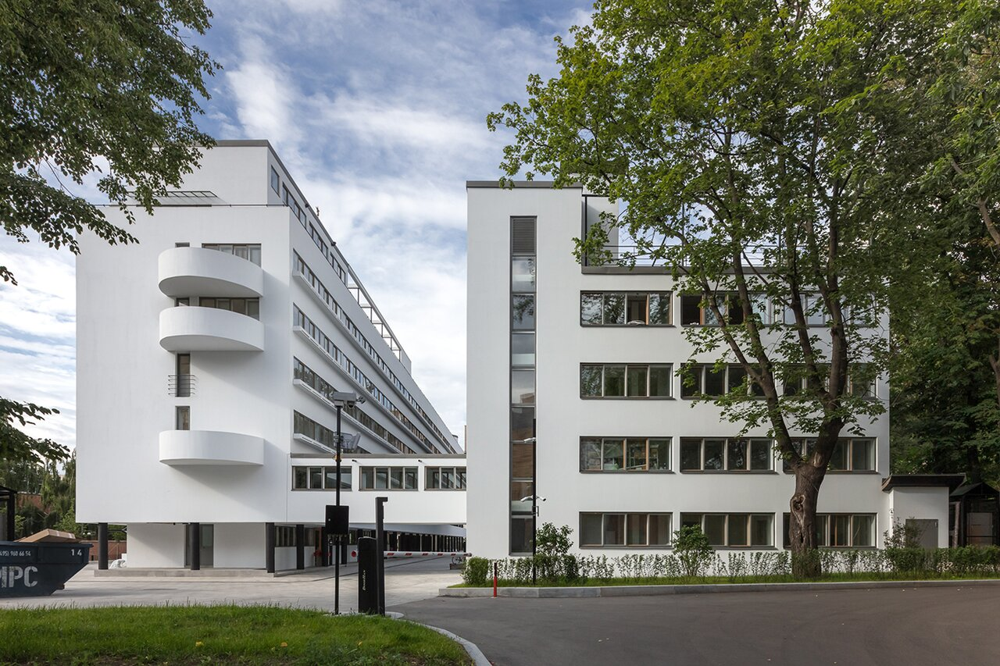

Один из знаковых памятников архитектуры советского авангарда и конструктивизма. Построен в 1928—1930 годах по проекту архитекторов Моисея Гинзбурга, Игнатия Милиниса и инженера Сергея Прохорова для работников Народного комиссариата финансов СССР (Наркомфина). Автор замысла дома Наркомфина М. Я. Гинзбург определял его как «опытный дом переходного типа». Дом находится в Москве по адресу: Новинский бульвар, дом 25, корпус 1.
С начала 1990-х годов, дом находился в аварийном состоянии, был трижды включён в список «100 главных зданий мира, которым грозит уничтожение». В 2017—2020 годах отреставрирован по проекту АБ «Гинзбург Архитектс», функционирует как элитный жилой дом. Отдельно стоящий "Коммунальный блок" (историческое название), планируется как место проведения публичных мероприятий.
Из всех различных индивидуумов и групп, занимавшихся реформированием повседневной жизни и консолидации социализма в 1920-е годы архитекторы занимали исключительное положение. Архитектурная инновация Дома Коммуны представляет наиболее полную попытку осуществления реформирования быта и консолидации советского социализма. Самой влиятельной группой архитекторов в этой области являлась ОСА (Объединение Современных Архитекторов, возглавляемая М. Я. Гинзбургом). В то время как прочие реформаторы быта пытались внедрить реформистские практики в остатки существующих дореволюционных форм, группа ОСА (образована в 1925 году М. Я. Гинзбургом и братьями Весниными), более известная как конструктивисты, пыталась решить проблему «нового быта» напрямую созданием принципиально новой архитектуры и материальной культуры, основанных на коммунистических отношениях производства и потребления.
Основной (жилой) корпус вытянут с севера на юг с небольшим отклонением от меридиональной оси, в глубине участка, в 165 м от Новинского бульвара (Садового кольца). Коммунальный (общественный) корпус расположен под углом 90° к жилому корпусу в его южной части и соединён с ним крытым навесным переходом в уровне второго этажа. Объём прачечной находится в северо-восточной части территории, ближе к Новинскому бульвару и композиционно связывает ансамбль с городом. Согласно первоначальному плану парка, прачечную и коммунальный корпус объединяла диагональная дорожка. Пройдя под жилым корпусом, можно было попасть на видовую площадку
«значительное повышение жизненного уровня рабочих и развитие обобществлённых форм обслуживания бытовых нужд трудящихся (общественное питание, ясли, детские сады, клубы и т. п.) постепенно уничтожают значение семьи как хозяйственного соединения. Этот процесс неизбежно приведёт, в конечном счёте, к полной переделке семейных форм общежития. <…> Задача раскрепощения женщины от мелкого домашнего хозяйства и вовлечение её в производство заставляет нас ставить вопрос о всемерном содействии этому процессу».